Auxiliar 5: Potencial Eléctrico y Conductores
Introducción a las ecuaciones de Poisson y Laplace, y primeros encuentros con conductores: inducción de cargas, energía potencial y conductores como superficies equipotenciales.
Temas que cubre
- Ecuación de Poisson: $\nabla^2 V = -\rho/\varepsilon_0$
- Ecuación de Laplace: $\nabla^2 V = 0$ (en regiones sin carga)
- Conductores: $V$ constante en todo el volumen
- Carga inducida en superficies conductoras
- Energía potencial $U = qV$ de una carga en un campo externo
Conceptos clave
Ecuación de Poisson
Es la versión diferencial de toda la electrostática: combina $\mathbf{E} = -\nabla V$ con $\nabla\cdot\mathbf{E} = \rho/\varepsilon_0$. Resolver Poisson nos da $V$ en todo el espacio.
Ecuación de Laplace
Caso especial de Poisson cuando $\rho = 0$. Sus soluciones son llamadas funciones armónicas y satisfacen el principio del valor medio: $V$ no tiene máximos ni mínimos locales.
Conductor = equipotencial
En equilibrio, $\mathbf{E} = 0$ dentro del conductor, por lo que $\nabla V = 0$ y $V$ es constante. Toda la carga libre se redistribuye en la superficie.
Inducción de carga
Una carga externa polariza el conductor: la cara más cercana acumula carga opuesta y la lejana carga del mismo signo, manteniendo $V$ constante en el conductor.
Fórmulas fundamentales

Qué hay que entender
- Poisson se usa donde hay carga: $\rho \neq 0$ (interior de un volumen cargado).
- Laplace se usa donde no hay carga libre: el espacio vacío entre conductores.
- En un conductor en equilibrio: $\mathbf{E} = 0$ dentro, $V$ = constante, $\rho = 0$ en el interior.
- Las condiciones de borde ($V$ dado en las superficies) son lo que determina la solución única de Laplace.